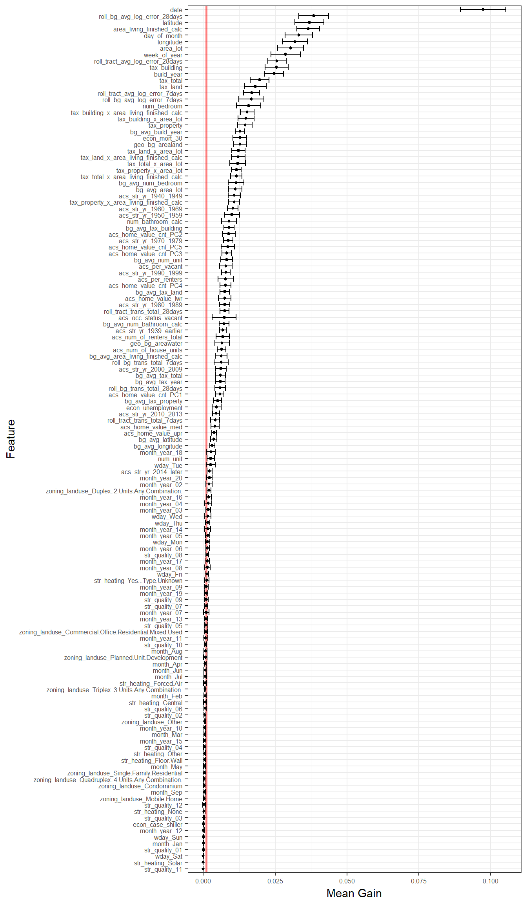

Chapter 5 Feature Selection
Based on the data frame we created in d and the transformation recipe we made we are going to do some initital analysis on which features we want to keep or drop. the xgboost package provides a function, xgb.importance() that gives a summary of how important each feature was in a model estimated by xgb.train()
To have a little more robustness in our selection, we will use v fold cross validation to get mutliple samples from d and investigate the importance of the features across all samples.
library(broom)
library(purrr)
importance_results <- function(splits) {
x <- bake(rec_prepped, newdata = analysis(splits))
y <- x$log_error
d <- model.matrix(log_error ~., data = x)
d <- xgboost::xgb.DMatrix(d, label = y)
mdl <- xgb.train(data = d, label = y, nrounds = 1000, nthread = 4)
print(summary(mdl))
mdl_importance <- as.data.frame(xgb.importance(model = mdl))
mdl_importance
}
resamples <- vfold_cv(d, v = 10, repeats = 5)
resamples$results <- map(resamples$splits,
importance_results)
importance_df <- bind_rows(resamples$results)
feature_avg <- importance_df %>%
group_by(Feature) %>%
summarise(
mean = mean(Gain),
sd = sd(Gain),
n = n()
)feature_avg %>%
ggplot(aes(x = forcats::fct_reorder(Feature, mean), y = mean)) +
geom_hline(aes(yintercept = 0.001), colour = "red", size = 1, alpha = 0.5) +
geom_point(size = 1) +
geom_errorbar(aes(ymin = mean - sd * 2, ymax = mean + sd * 2)) +
coord_flip() +
theme_bw() +
theme(
axis.text=element_text(size = 6)
) +
labs(
x = "Feature",
y = "Mean Gain"
)

Figure 5.1: Mean Feature Importance Based on Cross Validation Using Basic XGBoost Model